Cities
- Padmanabhaswamy Temple: One of the most famous temples in India, dedicated to Lord Vishnu, known for its architectural grandeur and historical treasures.
- Kovalam Beach: A world-renowned beach with pristine waters and beautiful views, popular for sunbathing and water sports.
- Napier Museum: A museum showcasing a rich collection of historical artifacts, bronze idols, and ancient ornaments.
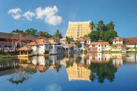
- Poovar Island: A serene getaway with golden beaches and lush green surroundings, perfect for a boat cruise.
- Agasthyakoodam: A trekker's paradise, part of the Western Ghats, known for its biodiversity and scenic beauty.
- Shanghumukham Beach: A serene beach near the airport, ideal for viewing sunsets and spending a peaceful evening.
- Fort Kochi: A historic seaside area known for its colonial architecture, including St. Francis Church and the Chinese Fishing Nets.
- Mattancherry Palace: Also known as the Dutch Palace, this museum showcases Kerala's royal heritage and art.
- Jewish Synagogue: A beautifully preserved synagogue located in the historic Jew Town area, dating back to the 16th century.
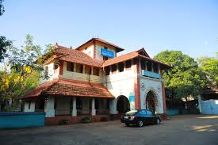
- Marine Drive: A scenic promenade along the coast, popular for walks and boat rides with views of the backwaters.
- Bolgatty Palace: A grand palace situated on Bolgatty Island, now serving as a luxury hotel with beautiful gardens.
- Kochi International Marina: A facility for yachts and boats, located near the picturesque Marine Drive area.
- Kozhikode Beach: A popular beach known for its beautiful sunsets and a lighthouse offering panoramic views of the Arabian Sea.
- Mananchira Square: A historic square with a park, musical fountain, and cultural significance, perfect for relaxation.
- Kozhippara Waterfalls: A scenic waterfall nestled in a lush forest, ideal for trekking and nature lovers.
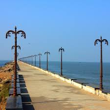
- Beypore: A historic port town known for its traditional wooden shipbuilding, known as 'Uru,' and serene beaches.
- Tali Shiva Temple: An ancient temple dedicated to Lord Shiva, famous for its architectural grandeur and cultural importance.
- SM Street: A bustling shopping street known for its traditional sweets, spices, and local handicrafts.
- Vadakkunnathan Temple: A historic Hindu temple dedicated to Lord Shiva, known for its beautiful architecture and serene surroundings.
- Shakthan Thampuran Palace: A royal palace that now serves as a museum, showcasing relics from Kerala’s history.
- Athirapally Waterfalls: A stunning waterfall, often referred to as the "Niagara of India," located near Thrissur.
- Thrissur Zoo and Museum: A popular destination for families, featuring a variety of animals and historical artifacts.
- Punnathur Kotta: An elephant sanctuary housing the temple elephants of Guruvayur, offering visitors a chance to see elephants up close.
- Guruvayur Temple: One of the most famous temples in Kerala, dedicated to Lord Krishna, drawing pilgrims from all over India.
- Ashtamudi Lake: A serene and picturesque lake known for its houseboat cruises and backwater beauty.
- Thangassery Lighthouse: A historic lighthouse offering stunning views of the Arabian Sea and the surrounding coastline.
- Palaruvi Waterfalls: A beautiful waterfall located amidst lush greenery, a popular spot for nature lovers.
- Thirumullavaram Beach: A tranquil beach perfect for relaxing and enjoying the sunset over the Arabian Sea.
- Jatayu Earth's Center: A unique tourism spot featuring the world’s largest bird sculpture and adventurous activities.
- Kollam Beach: A bustling beach with a lighthouse, popular among tourists and locals for evening outings.
Backwaters and Houseboats
Alappuzha (Alleppey)
- Alleppey Backwaters: A network of serene waterways, offering tranquil boat rides and stunning views of nature.
- Houseboat Cruises: A must-do experience, where visitors can stay overnight in traditional houseboats while exploring the backwaters.
- Alappuzha Beach: A pristine beach known for its beautiful sunsets and the iconic Alappuzha lighthouse.
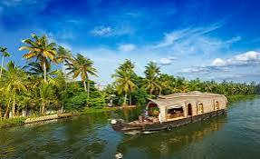
- Kumarakom Bird Sanctuary: Located near the backwaters, it's a haven for birdwatchers and nature enthusiasts.
- Vembanad Lake: The largest lake in Kerala, ideal for boating, fishing, and witnessing traditional village life on its shores.
- Pathiramanal Island: A scenic island in the middle of Vembanad Lake, offering peaceful surroundings and rich birdlife.
Kumarakom
- Kumarakom Backwaters: A serene network of lakes, canals, and rivers, perfect for houseboat cruises and scenic views.
- Bird Sanctuary: A famous bird sanctuary that attracts migratory birds, making it a paradise for bird watchers.
- Aruvikkuzhi Waterfall: A picturesque waterfall located amidst rubber plantations, a perfect spot for nature lovers.
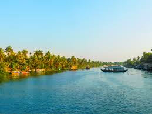
- Houseboat Cruises: Kumarakom is famous for its luxurious houseboat cruises that offer a peaceful retreat on the backwaters.
- Pathiramanal Island: A small, scenic island on the backwaters, ideal for picnics and bird watching.
- Vembanad Lake: The largest lake in Kerala, offering boating, fishing, and sightseeing experiences.
Kollam (Quilon)
- Ashtamudi Lake: A scenic backwater lake known for its houseboat cruises and serene beauty.
- Munroe Island: A cluster of islands, offering a peaceful retreat and a glimpse of traditional village life, accessible by boat.
- Thangassery Lighthouse: A historic lighthouse that provides a panoramic view of the Arabian Sea and surrounding backwaters.
- Houseboat Cruises: A popular attraction, offering overnight stays on traditional houseboats that navigate through the backwaters.
- Kollam Beach: A tranquil beach perfect for relaxing walks along the coastline.
- Punalur Suspension Bridge: One of the oldest suspension bridges in India, showcasing impressive engineering and scenic views.
Beaches
Kovalam
- Lighthouse Beach: The most popular beach in Kovalam, known for its iconic lighthouse and stunning sunsets.
- Hawa Beach: A beautiful beach famous for its tranquil atmosphere, perfect for relaxing and sunbathing.
- Samudra Beach: A quieter beach ideal for swimming and enjoying the scenic views of the Arabian Sea.
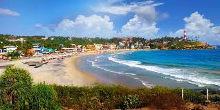
- Ayurvedic Centers: Kovalam is renowned for its Ayurvedic treatments and wellness centers, offering traditional therapies.
- Kovalam Beach Market: A vibrant market where visitors can shop for handicrafts, souvenirs, and local products.
- Vizhinjam Lighthouse: A historical lighthouse providing panoramic views of the coastline and the surrounding sea.
Varkala
- Varkala Beach: Known for its stunning cliffs and scenic views, it’s a popular spot for relaxation and water sports.
- Papanasam Beach: A serene beach famous for its mineral-rich waters, believed to have healing properties.
- Sivagiri Mutt: A prominent spiritual center founded by Sree Narayana Guru, offering peaceful surroundings and meditation spots.
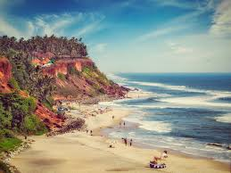
- Anjengo Fort: A historical fort with stunning views of the Arabian Sea, perfect for history enthusiasts.
- Janardhana Swami Temple: An ancient temple dedicated to Lord Vishnu, located near the beach.
- Kappil Beach: A less crowded beach known for its picturesque beauty and tranquil atmosphere.
Kozhikode (Calicut)
- Kozhikode Beach: A popular beach known for its scenic beauty, picturesque sunsets, and bustling promenade.
- Calicut Lighthouse: An iconic lighthouse offering stunning views of the Arabian Sea and the surrounding coastline.
- Thusharagiri Waterfalls: A beautiful waterfall nestled in the Western Ghats, ideal for nature lovers and trekkers.
- Payyoli Beach: A serene beach known for its golden sands and clear waters, perfect for relaxation.
- Beach Park: A family-friendly park located near the beach, offering recreational facilities and picnic spots.
- Mananchira Square: A beautiful park with a historic pond, ideal for leisurely walks and cultural events.
Cultural and Heritage Sites
Fort Kochi
- Chinese Fishing Nets: Iconic fishing nets that are a symbol of the region, showcasing a unique method of fishing.
- St. Francis Church: The oldest European church in India, where Vasco da Gama was originally buried.
- Fort Kochi Beach: A serene beach perfect for sunset views, lined with historic structures and local eateries.
- Santa Cruz Basilica: A stunning church known for its beautiful architecture and vibrant interiors.
- Mattancherry Palace: Also known as the Dutch Palace, it showcases a fascinating history and exquisite murals.
- Jew Town: A historic area with a rich Jewish heritage, featuring the famous Paradesi Synagogue.
Thrissur
- Vadakkunnathan Temple: An ancient Shiva temple known for its stunning architecture and rich history, a UNESCO World Heritage Site.
- Thrissur Pooram: A famous temple festival celebrated with grand processions, fireworks, and traditional music.
- Archaeological Museum: Showcases artifacts and exhibits related to the history and culture of Kerala.
- Kerala Sahitya Akademi: A prominent institution promoting Malayalam literature and culture, hosting various literary events.
- Paramekkavu Bagavathi Temple: A famous temple known for its rituals and vibrant festivals, dedicated to the goddess Bagavathi.
- Shakthan Thampuran Palace: A historical palace that offers insights into the royal heritage of Thrissur, now a museum.
Wildlife and Nature Reserves
Periyar National Park and Wildlife Sanctuary
- Wildlife Spotting: Home to elephants, tigers, and various bird species, offering excellent wildlife viewing opportunities.
- Periyar Lake: A picturesque lake at the heart of the park, ideal for boat rides and spotting wildlife.
- Nature Walks: Guided treks through the lush forests, providing insights into the park's flora and fauna.
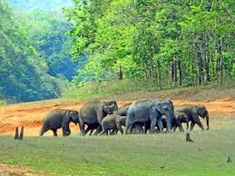
- Eco-Tourism Activities: Engage in eco-friendly activities such as bamboo rafting and tribal heritage tours.
- Visitor Centre: Provides information about the park's wildlife and conservation efforts.
- Bird Watching: A paradise for bird watchers with numerous migratory and resident bird species.
Silent Valley National Park
- Overview: A UNESCO World Heritage Site, Silent Valley is known for its rich biodiversity, dense rainforests, and unique flora and fauna.
- Wildlife: Home to various species, including the endangered Lion-tailed Macaque, Malabar Giant Squirrel, and several species of birds and butterflies.
- Trekking: The park offers several trekking trails, allowing visitors to explore its stunning landscapes and diverse ecosystems.
- Flora: The park is home to several endemic plant species, including rare orchids and medicinal plants.
- Conservation Efforts: The park plays a crucial role in conservation, protecting the unique ecosystems and species of the Western Ghats.
- Visitor Information: The best time to visit is between December and April when the weather is pleasant for exploring.
Wayanad Wildlife Sanctuary
- Muthanga Wildlife Sanctuary: Known for its rich biodiversity, this sanctuary is home to elephants, deer, and various bird species.
- Tholpetty Wildlife Sanctuary: A serene sanctuary offering jeep safaris to explore its diverse wildlife and scenic landscapes.
- Pakshipathalam Bird Sanctuary: A haven for bird watchers, featuring numerous species of birds amidst lush greenery.
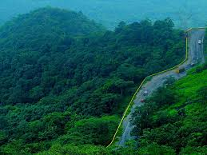
- Edakkal Caves: Ancient caves with prehistoric carvings, offering a glimpse into the region's history.
- Chembra Peak: The highest peak in Wayanad, ideal for trekking and panoramic views of the surroundings.
- Kuruva Island: A beautiful island on the Kabini River, known for its lush greenery and tranquil environment.
Historical and Religious Sites
Thiruvananthapuram (Trivandrum)
- Sree Padmanabhaswamy Temple: A famous temple dedicated to Lord Vishnu, known for its stunning architecture and intricate carvings.
- Kuthira Malika Palace: A historical palace built by Maharaja Swathi Thirunal, showcasing traditional Kerala architecture.
- Napier Museum: A museum housing a rich collection of art and artifacts, including ancient bronze idols and traditional Kerala lamps.
- Chowara Beach: A serene beach known for its beautiful landscape and tranquil atmosphere, perfect for relaxation.
- Agasthyakoodam: A significant hill and a revered site for its religious and ecological importance.
- Shri Chitra Art Gallery: A gallery displaying a rich collection of traditional and contemporary Indian art.
Guruvayur
- Guruvayur Temple: One of the most famous Hindu temples dedicated to Lord Krishna, attracting millions of devotees each year.
- Elephant Sanctuary: A unique facility where visitors can interact with elephants, often referred to as the "Elephant Abode."
- Chottanikkara Bhagavathy Temple: A revered temple dedicated to Goddess Bhagavathy, located nearby and known for its spiritual significance.
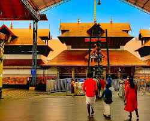
- Guruvayur Kshetram: The sacred complex around the temple that includes various shrines and places of worship.
- Punnathur Kotta: The historical elephant palace where the temple's elephants are housed, offering insights into their care and training.
- Vadakkumnathan Temple: An ancient temple dedicated to Lord Shiva, located in the vicinity and known for its stunning architecture.
Other Notable Attractions
Palakkad
- Palakkad Fort: A historic fort built in the 18th century, offering insights into the region's history and stunning views of the surroundings.
- Malampuzha Dam: A scenic dam surrounded by gardens, ideal for picnics, boating, and enjoying the serene landscape.
- Silent Valley National Park: A pristine rainforest known for its biodiversity and trekking trails, perfect for nature enthusiasts.
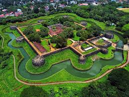
- Parambikulam Tiger Reserve: A protected area known for its wildlife and scenic beauty, offering trekking and safari experiences.
- Attappadi: A tribal settlement known for its natural beauty and cultural diversity, perfect for experiencing rural Kerala.
- Kottayi: A charming village known for its picturesque landscapes and the famous Kottayi Pottery.
Malappuram
- Kottakkunnu: A beautiful park and hilltop area with stunning views, ideal for picnics and relaxation.
- Malappuram Juma Masjid: One of the largest mosques in Kerala, known for its stunning architecture and historical significance.
- Thirunavaya Navamukunda Temple: An ancient temple located on the banks of the Bharathappuzha River, known for its rituals and festivals.
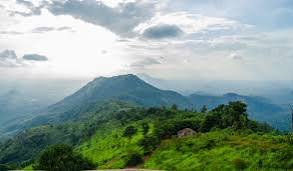
- Down Hill: A scenic hill station known for its natural beauty and pleasant weather, perfect for trekking.
- Vettakkorumakan Temple: An ancient temple famous for its unique architecture and annual festivals.
- Nilambur Teak Museum: The world's first teak museum, showcasing the history and significance of teak wood in the region.
Kasargod
- Bekal Fort: A massive fort built in the 17th century, offering stunning views of the Arabian Sea and a beautiful beach nearby.
- Ananthapura Lake Temple: The only lake temple in Kerala, located in the midst of a serene lake and surrounded by lush greenery.
- Kottancheri Hills: A picturesque hill station known for its trekking trails and diverse flora and fauna.
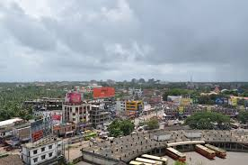
- Malik Deenar Mosque: An ancient mosque renowned for its unique architecture and historical significance.
- Chandragiri Fort: A fort that offers breathtaking views of the surrounding area and the Payaswini River.
- Shri Raghavendra Swamy Mutt: A spiritual center dedicated to the teachings of Saint Raghavendra, attracting many devotees.
Eco-Tourism Destinations
Thenmala
- Thenmala Eco- tourism: A beautiful site that promotes eco-friendly tourism with activities like trekking and nature walks.
- Thenmala Dam: A scenic dam surrounded by lush greenery, ideal for photography and relaxation.
- Butterfly Park: A dedicated park showcasing a variety of butterfly species, offering a peaceful atmosphere for nature lovers.
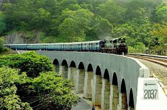
- Shenduruny Wildlife Sanctuary: A nearby sanctuary rich in biodiversity, perfect for wildlife enthusiasts and bird watchers.
- Eco-Friendly Activities: Options include bamboo rafting, rock climbing, and nature trails, promoting sustainable tourism.
- Thenmala Cultural Zone: Offers insights into the local culture and traditions through various exhibitions and events.
Muziris Heritage Project
- St. Mary’s Syro-Malabar Church: An ancient church that reflects the rich history and architecture of the region.
- Paravur Synagogue: A historic Jewish synagogue known for its stunning interiors and heritage.
- Kottayil Kovilakam: A traditional heritage home showcasing the local culture and architecture.
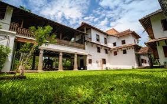
- Chennamangalam Fort: A historic fort that offers stunning views and insights into the region’s history.
- Vallarpadam Church: A significant pilgrimage site with beautiful architecture and serene surroundings.
- Eco-Tourism Trails: Scenic trails for walking and cycling, allowing visitors to explore the lush landscapes and local flora.